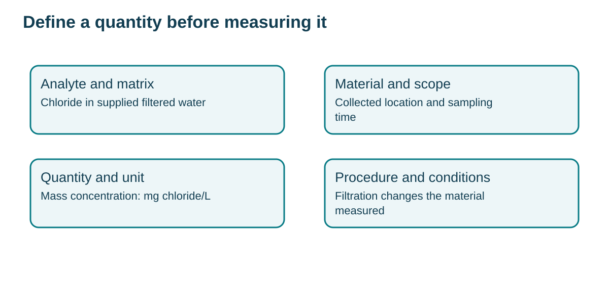
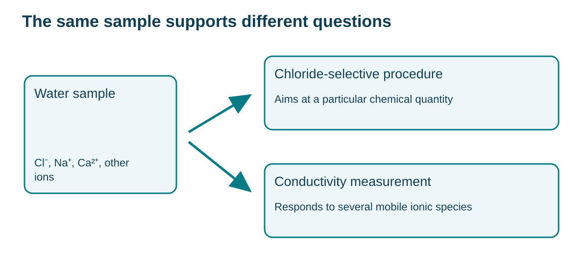
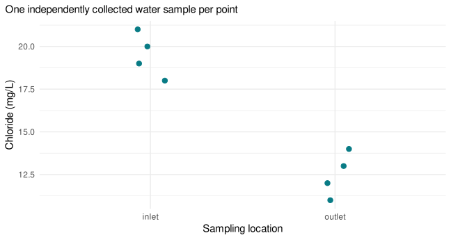
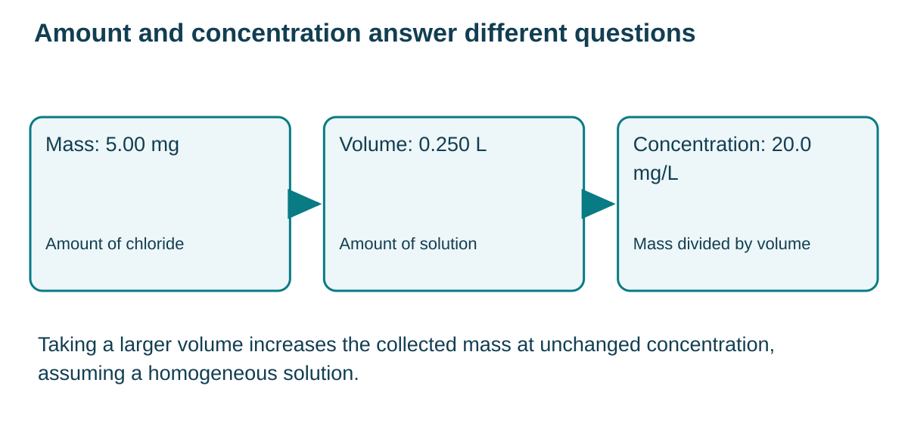
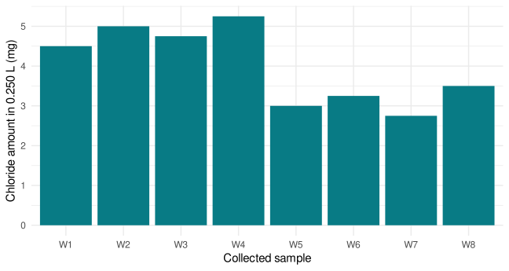

library(readr)
library(dplyr)
library(ggplot2)
water <- read_csv("data/course/water.csv", show_col_types = FALSE)
glimpse(water)
stopifnot(!anyDuplicated(water$sample_id),
all(water$collected_l > 0), !anyNA(water$chloride_mg_l))From sample to answer
Define the chemical quantity before calculating it
Interactive experiment
Explore the browser demo: Does changing the amount of solution change concentration, total analyte amount, or both? Predict first, change one condition, then explain the result. Export a CSV to reproduce one calculation or plot in R.
Start with a question that has a unit
A water sample gives a number on an instrument. What does that number represent? Before choosing software, define the measurand: the quantity intended to be measured. Here it is chloride mass concentration, in mg chloride/L, in water collected at a named location and time. The analyte is chloride; the matrix is water and everything else it contains. A response in volts or absorbance is a signal, not yet that chemical quantity.
By the end, you should be able to state a measurand, distinguish concentration from amount, inspect an analytical table in R, and make a restrained comparison of collected samples.

“Total iron”, “dissolved iron” and “iron(II)” are different questions. A filter changes the material entering a procedure; a reduction can change oxidation state. A report needs enough preparation information to tell the reader what was actually measured. More decimal places cannot repair an ambiguous question.
Follow the analytical process

A useful sequence is: define the question; obtain material that represents it; prepare a known part; obtain a selective enough signal; calibrate and check the measurement; calculate back to the original material; state uncertainty and limitations. R makes the calculations reproducible. It cannot restore analyte lost during storage or establish selectivity from a spreadsheet column name.
A qualitative question asks whether evidence supports the presence or identity of a substance. A quantitative question asks how much. A matching retention time is evidence of identity under the stated conditions, but another compound can share it. Quantification requires the intended analyte to account for the measured response well enough for the question.

For example, conductivity responds to several mobile ionic species. A low conductivity reading is not automatically a low chloride concentration. Choose a procedure whose response can be related to the proposed measurand.
Retrieve the R workflow
Download the course project from the link below, extract it, and open analyticalchem.Rproj. Run R in the R console. Files in data/ are untouched inputs; save derived results in output/. All datasets in this course are simulated teaching data. Read data/course/README.md for their chemical assumptions and column definitions.
One row is one independently collected sample. The four inlet and four outlet samples are not matched pairs. Their row order does not establish a before/after design. Check IDs, units, missing values and the meaning of a row before doing statistics. This supplied table is complete; a missing measurement in another table must not silently become zero.
summary_water <- water |>
group_by(location) |>
summarise(n_samples = n(), mean_mg_l = mean(chloride_mg_l),
sd_mg_l = sd(chloride_mg_l), .groups = "drop")
summary_water
ggplot(water, aes(location, chloride_mg_l)) +
geom_point(position = position_jitter(width = 0.08, height = 0, seed = 7)) +
labs(x = "Sampling location", y = "Chloride (mg/L)") +
theme_minimal()
The means are 19.5 and 12.5 mg/L. That is a 7.0 mg/L descriptive difference for these collected samples. The design does not establish a treatment effect or represent every time of day. Start with the individual observations, units, and sampling scope. There is no need to add a hypothesis test to every table.
Convert units without changing the quantity
For a homogeneous solution, mass concentration \(c=m/V\), so mass \(m=cV\). A 0.250 L portion at 20.0 mg/L contains 5.00 mg analyte. Taking twice the volume at the same concentration doubles the collected amount, not the concentration.

water <- water |>
mutate(chloride_g_l = chloride_mg_l / 1000,
chloride_mg = chloride_mg_l * collected_l)
water |> select(sample_id, chloride_mg_l, chloride_g_l, chloride_mg)
write_csv(water, "output/water-derived.csv")Keep the unit in the variable name or dictionary, and in every plotted axis. Here 20 mg/L = 0.020 g/L. Converting mg to g without also changing the reported unit would give a thousand-fold error. Do not label every concentration “ppm”: mg/L is a mass-per-volume quantity, whereas a mass fraction needs a mass basis. For dilute water they can sometimes be approximately related using density, but they are not definitions of the same quantity.

Practical and transfer
Create course-report.Rmd at the project root from the supplied template. State the measurand and what one row represents. Include the individual-point plot, a location summary with sample counts, one unit conversion, and a paragraph about what the design supports. Save your table and render the report after restarting R.
For a separate unknown, the analysis establishes 0.0750 mg chloride in a 25.00 mL portion. Calculate mg/L. Then state which extra information would be needed to claim a location-wide mean or an uncertainty for the result.
Check your result
\(0.0750/0.02500=3.00\) mg/L. The arithmetic alone supplies neither representative sampling nor an uncertainty estimate. For the supplied water table the inlet mean is 19.5 mg/L and outlet mean 12.5 mg/L; both use four collected samples.
Explain before moving on
- Why does filtering a sample matter to the measurand? It changes the material analysed; retained particles do not enter the filtered-water result.
- Why plot observations before comparing means? It exposes spread, unusual values and how much evidence supports the summary.
- Could a perfectly reproducible report have a wrong result? Yes: a wrong unit, inappropriate method or unrepresentative sample can be reproduced too.
Selected Harris and Lucy reading: 0–2. Read by topic; the planned course edition is not yet confirmed.